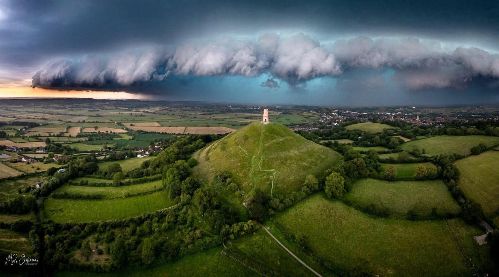
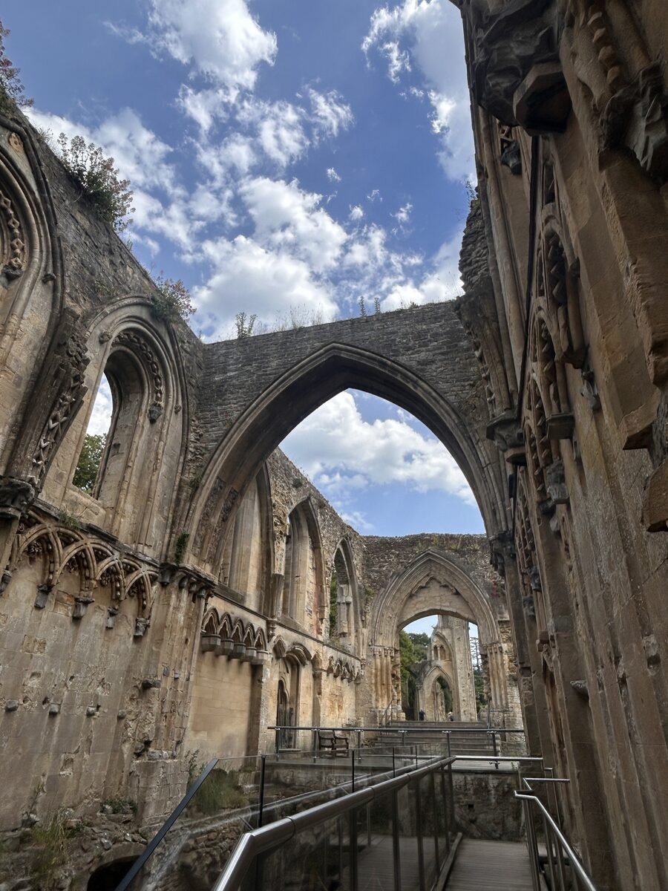
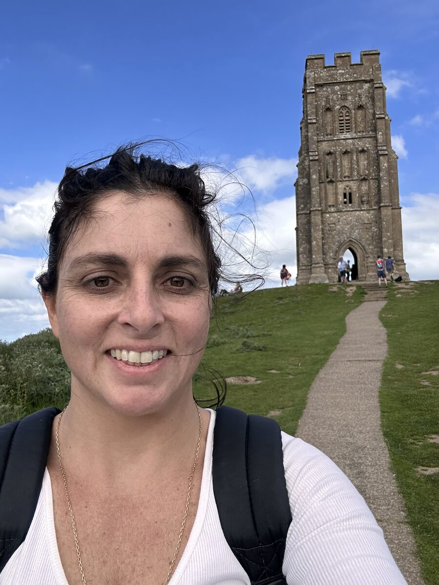
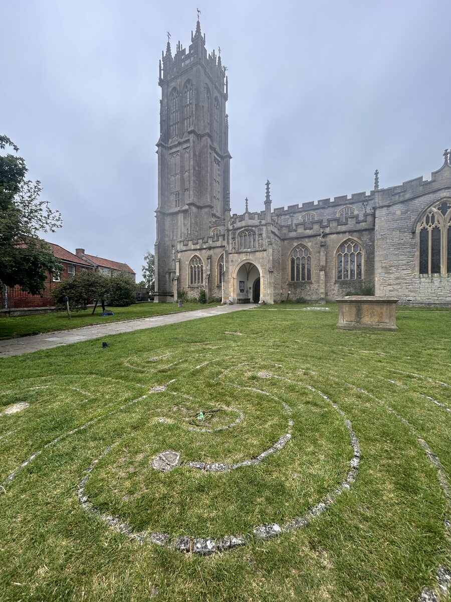
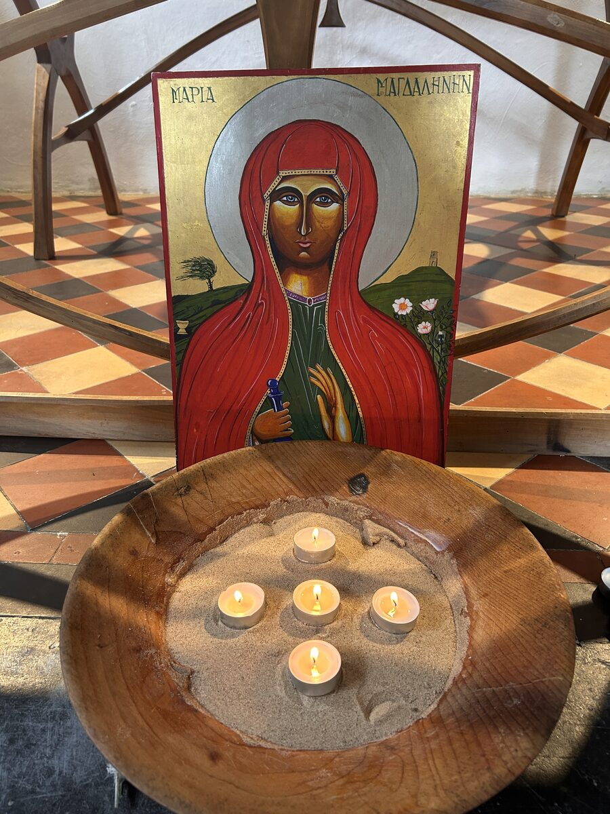

La tormenta que lo cambió todo
Reflexiones desde Avalon

Ayer escribía con la espalda apoyada en un majestuoso roble, en la abadía de Glastonbury.

Los robles eran los árboles predilectos de los druidas. Simbolizan la fuerza, la sabiduría y la unión entre el cielo y la tierra. Mientras descansaba bajo sus ramas sentía exactamente eso: que algo dentro de mí también empezaba a echar raíces.
Había llegado a Avalon buscando algo que ni siquiera sabía poner en palabras.
Y me marchaba con la sensación de haber encontrado muchas respuestas.
O quizá, simplemente, de haber dejado de hacerme tantas preguntas.

Hacer vs. ser
Durante estos días entendí que la forma en la que me estaba relacionando con el trabajo no hacía más que drenarme.
Había aprendido a sostenerlo todo.
A resolverlo todo.
A estar siempre disponible.
Y, sin darme cuenta, había terminado viviendo mucho más desde la energía de hacer que desde la de ser.
Sentada bajo aquel roble comprendí que nadie iba a plantar mis sueños por mí.
Que soñar está muy bien.
Pero después hay que sembrar.
Regar.
Esperar.
Confiar.
Y cuidar esos pequeños brotes hasta que, un día, se conviertan en árboles tan fuertes como aquel bajo el que escribía.
Los elementos
También entendí que la espiritualidad no consiste en buscar respuestas fuera.
Consiste en volver a escuchar las verdades de tu propia alma.
Abrir el corazón.
Encender los sentidos.
Expandir la mirada.
Y recordar que la naturaleza lleva siglos enseñándonos exactamente cómo vivir.
El fuego vino a recordarme que puedo transformar aquello que ya no quiero seguir cargando.
El agua me enseñó que siempre existe un camino hacia el océano, aunque a veces no pueda verlo.

La tierra me sostuvo. Me recordó que mi cuerpo también necesita ser cuidado porque es el templo desde el que vivo esta experiencia.
El viento me habló de cambio.
De dejar caer las hojas que ya no forman parte de mi historia.
Y el éter...
El éter me recordó que nunca estamos solos cuando aprendemos a escuchar.
Aquella tarde escribí una frase en mi cuaderno:
"Hoy entiendo Avalon."

Creía que el viaje había terminado.
Qué ingenua fui.
Porque apenas unas horas después comenzó el verdadero aprendizaje.
⸻
La tormenta
Mi vuelo de regreso fue cancelado.
Una tormenta eléctrica había averiado el radar del aeropuerto y, en cuestión de minutos, miles de personas nos quedamos atrapadas.
Lo que vino después fue un pequeño caos.
Colas interminables.
Reservas de hotel desaparecidas.
Un recepcionista a punto de llorar porque Booking aseguraba que mi reserva existía y el hotel no la encontraba.
Carreteras cortadas.
Un taxi imposible de pagar.
Otro vuelo.
Otra terminal.
Otra noche.
Muy pocas horas de sueño.
Y la sensación constante de que cada vez que resolvía un problema aparecía otro.
Recuerdo llegar de madrugada al aeropuerto.
Descubrir que estaba en la terminal equivocada.
Sentarme un momento y pensar:
"No puedo más."
Creo que incluso lloré un poco.
Y, sin embargo, seguí.
Compré otro billete.
Cogí otro tren.
Busqué otro hotel.
Volví a empezar.
Una y otra vez.
Hasta que entendí por qué había venido aquella tormenta.
Lo que la tormenta vino a enseñarme
No había venido para fastidiarme el viaje.
Había venido para comprobar si realmente había integrado todo lo que Avalon me había enseñado.
Porque confiar no significa esperar a que nunca aparezcan problemas.
Confiar también es tomar decisiones cuando todo cambia.
Fluir no significa quedarse quieta.
Fluir también es cambiar de ruta cuando el camino se corta.
Seguir avanzando.
Insistir.
Confiar en que, aunque tardes más de lo previsto, acabarás llegando.
Y hubo otra comprensión que me emocionó profundamente.
El mundo no se cayó porque yo no estuviera trabajando.
Los eventos siguieron.
La vida continuó.
Y yo, por primera vez en mucho tiempo, me permití hacer una sola cosa.
Volver a casa.
Hoy sé que Avalon no es solo un lugar.
Es un estado de conciencia al que siempre puedo regresar.
Cuando respiro.
Cuando camino entre árboles.
Cuando escucho el agua.
Cuando enciendo una vela.
Cuando dejo que el viento se lleve aquello que ya no necesito sostener.



Avalon no se quedó en Inglaterra.
Avalon volvió conmigo.